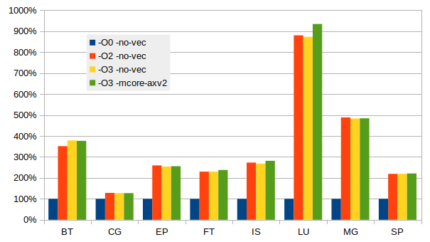
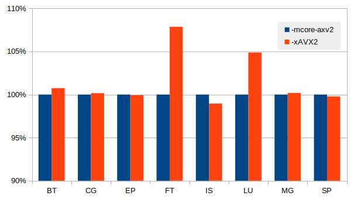

Building scientific software
Introduction
This is just a quick short guide on the topic. For more in depth documentation please check out the PRACE Best Practice Guides.
Most relevant for Betzy and an update covering AMD Rome named “Best Practice Guide Modern Processors” soon to be published.
Compilers
Introduction
Include paths in C/C++ and Fortran are distictly different. The module system set the flag CPATH for us which contain a ‘:’ separated list
of directories to be searched for a include files. This is done behind the scenes for us whein using C/C++. However, with Fortran this is another story.
Fortran compilers uses a set of ‘-I’ options each with a single directory as argument. This prevent us from using $CPATH for include path. One might think
that FPATH should be a solution (so did Intel some years ago) but it can interfere with some shells (ksh) and should avoided a general setting. However, it does not
prevent us from doing it locally (avoiding ksh or othes shells that might be affected).
The FPATH can be set : export FPATH="-I"${CPATH//:/ -I}
Then $FPATH can be used in Makefiles and on the command line like gfortran $FPATH file.f90
For command line a direct syntax can be used like : gfortran -I${CPATH//:/ -I/} file.f90
Intel
Introduction
The Intel compiler suite is supported on all Sigma2 systems. On the systems Saga the processors are from Intel while the processors on Betzy are from AMD. As the Intel compiler is primarily compiler written for the Intel processors there are some minor issues when using it to build core for the AMD processors.
Documentation
The documentation of the Intel compiler are found at Intel compiler The web site is comprehensive and some browsing are required to find the needed documents. Most users want to review the reference manual.
Compiler flags
The single most common question requested is a set of suggested compiler flags. The Intel development team have already selected a very good set of flags and just a simple -O3 flag will provide quite good choice. The compiler comes with a set of default optimisation flags already set. Just invoking the compiler without any such flags will generate reasonably good code.
The flag for OpenMP is very often needed : -qopenmp and must be used in both compiling a linking.
To ask the compiler generate optimised code have a huge impact in performance. The following graph show the observed speed using the NASA NPB MPI benchmarks built using the Intel compiler and run using OpenMPI at 64 ranks.

The benefit of selecting optimisation flags is obvious. The effect of vectorisation is less pronounced with these benchmarks which are extracts from real applications and running with datasets of serious size. The compiler can recognise some type of code and generate excellent code, often related to cache and TLB issues. Just looking at the generated code will not tell what the compiler actually did. See an extreme case with matrix multiplication below. Tuning tools can help looking for cache and TLB issues.
Some optimisation flags are a bit more tricky. As all processors support AVX2 this can always be used. A suggested list set of flags than be tried might include:
-O3
-O3 -xHost
-Ofast
-O3 -march=core-avx
-O3 -march=core-avx2 -mtune=core-avx2
-O3 -xavx
-O3 -xavx2
-O3 -xcore-avx2
The flags above have been tested and yield good results. On Betzy the flags involving -xavx, -xavx2 and -xcore-avx2 can cause problems. As the -x prefix implies it will only generate code for a processor supporting AVX and AVX2. Intel has implemented a run time processor check for any program compiled with these flags, which will result in a message like this:
Please verify that both the operating system and the processor support
Intel(R) X87, CMOV, MMX, FXSAVE, SSE, SSE2, SSE3, SSSE3, SSE4_1, SSE4_2,
MOVBE, POPCNT, AVX, F16C, FMA, BMI, LZCNT and AVX2 instructions.
This only apply to the main routine. If the main() function is not compiled
with -xavx/-xavx2 flags the test is not inserted and performance
is as expected.
The safe option is -O3 -march=core-avx2 -mtune=core-avx2 which mostly provide fair performance.
Vectorisation flag |
Single core performance |
|---|---|
-O3 |
4.33 Gflops/sec |
-O3 -march=core-avx2 |
4.79 Gflops/sec |
-O3 -xavx |
17.97 Gflops/sec |
-O3 -xavx2 |
26.39 Gflops/sec |
-O3 -xcore-avx2 |
26.38 Gflops/sec |
Warning
The -xavx2 flag is quite intrusive, it’s building only AVX2 vector
instructions and if the processor does not support it, you’ll get illegal
instruction.
The example above is a best case where the Intel compiler manage to analyse the code and apply special optimisation for matrix multiplication. Checking the code show that is does not call external functions like the matmul in MKL.
For codes that are more realistic and closer to scientific codes like the NPB benchmarks the effect
is much smaller. In some cases there are still a significant gain by using the -xAVX2, the figure
below illustrate this.

There are a large range of other flags, and while the web
documentation is very good it can be overwhelming. A simple trick is
to issue the following command icc -help > icc.hpl and open the file
in an editor and search and read relevant paragraphs. Except from
language specific flags most of the flags are similar for C/C++ and
Fortran.
The flags related to optimisation reports can be useful, -qopt-report. To generate a nice optimisation report some of the following flags could be used.
-qopt-report-help
-qopt-report=1 (any number from 1 through 5 are valid, 0 turn it off)
-qopt-report-file=<file.opt.txt>
-qopt-report-annotate
An example is : -qopt-report=5 -O3 -xavx2 -g -S which will generate
a comprehensive report and a file containing the generated
code. Reviewing this report and the code can be of great help in cases
where the compiler fail to optimise as expected.
GNU
Introduction
GNU compilers are an integral part of the Linux distribution. However, the versions of the compilers that comes with the distribution are generally not the newest version. Look for modules that supply a more recent version. The compiles support C/C++ and Fortran.
Documentation
The compilers have good man pages covering most of what is commonly needed. More deep documentation is found here : https://gcc.gnu.org/onlinedocs/ .
Compiler flags
The default settings of gcc/gfortran are not optimal for performance. A set of optimising flags are needed. The flag for OpenMP is -fopenmp.
There a lot of optimisers available, a list can be generated using the command
gcc --help=optimizers
Some set of flags for optimisation include :
-O2 (often use for only memory intensive applications)
-O3
-O3 -mfma -mavx2
-O3 -march=znver2 -mtune=znver2 (for AMD)
-O3 -march=skylake-avx512 (for Intel Skylake)
When gfortran include paths is given by gcc CPATH the following line is bash command line substitute can be beneficial :
gfortran -O3 -I${CPATH//:/ -I/}
AMD AOCC/llvm
Introduction
AMD support the development of compilers based on llvm. The Software development kit can be found at : https://developer.amd.com/tools-and-sdks/ . C/C++ and Fortran are supported.
Documentation
The AMD documentation is limited. Documentation can be found at the AMD developer web site given above.
Compiler flags
The llvm compiler show a huge range of compiler flags, the AMD documentation provide a nice subset of relevant flags. The flag for OpenMP is -fopenmp. A suggested flags to try is given below.
-O3
-Ofast
-Ofast -march=znver2 -mtune=znver2 (for AMD)
-Ofast -march=znver2 -mavx2 -m3dnow (for AMD)
PGI
Introduction
Portland Group compiler, known as PGI compiler is now a part of NVIDIA. The PGI web page is still available : https://www.pgroup.com/index.htm .
Documentation
Documentation can be found at : https://www.pgroup.com/resources/docs/20.4/x86/index.htm
Compiler flags
Please review the documentation for an updated list of the suggested compiler flags.
A set of suggested flags are :
-O3 -tp zen -Mvect=simd -Mcache_align -Mprefetch -Munroll (for AMD)
Performance of compilers
A test using the well known reference implementation of matrix matrix (dgemm) multiplication is used for a simple test of the different compilers.
Compiler |
Flags |
Performance |
|---|---|---|
GNU gfortran |
-O3 -march=znver2 -mtune=znver2 |
4.79 Gflops/s |
AOCC flang |
-Ofast -march=znver2 -mavx2 -m3dnow |
5.21 Gflops/s |
Intel ifort |
-O3 -xavx2 |
26.39 Gflops/s |
The Intel Fortran compiler do a remarkable job with this nested loop problem. As we have seen above the matrix matrix multiplication is a special case. For more realistic examples the performance is more comparable.

It turns out that for the EP benchmark (Generate independent Gaussian random variates using the Marsaglia polar method) the Intel compiler manage to do something smart.
Performance libraries
Intel MKL
Introduction
The Intel Math Kernel Library comes with the compiler suite and is well known as high performance library. It comes in both sequential and multi threaded functions and is know for its very high performance.
MKL have wrappers for FFTW so no rewrite is needed to link any applications using FFTW with MKL. Both Include files and library functions are provided.
When using the Intel compiler the compiling and linking is very simple, most of the times is enough to just add -mkl. Adding =sequential or =parallel.
When using MKL with the GNU compilers some more work is often needed, both include paths and linking paths.
An example can provide some hints:
-L$MKLROOT/lib/intel64 -lmkl_gnu_thread -lmkl_avx2 -lmkl_core -lmkl_rt
The variable MKLROOT is set when the Intel module is loaded.
In many cases the include files are needed and since the CPATH is set by module scripts the following command like might easy the process of
translating a colon separated string of directories to something that the Fortran compiler will accept.
gfortran -O3 -I${CPATH//:/ -I/} fftw-3d.f90 ${MKLROOT}/lib/intel64/libfftw3xf_intel.a -lmkl_sequential -lmkl
The above example is an example og using the FFTW wrapper in MKL, using only environment variables set by the module scripts it will
be portable with different versions of MKL.
The following command can be of help when encounter missing symbols:
nm -A $MKLROOT/lib/intel64/* | grep <missing symbol>
Look for symbols with T (T means text,global - e.g. it’s available, U means undefined).
Forcing MKL to use best performing routines
MKL issue a run time test to check for genuine Intel processor. If this test fail it will select a generic x86-64 set of routines yielding inferior performance. This is well documented in Wikipedia and remedies in Intel MKL on AMD Zen.
Research have discovered that MKL call a function called mkl_serv_intel_cpu_true() to check the current CPU. If a genuine Intel processor is found it simply return 1. The solution is simply to override this function by writing a dummy functions which always return 1 and place this early in the search path. The function is simply:
int mkl_serv_intel_cpu_true() {
return 1;
}
Compiling this file into a shared library using the following command:
gcc -shared -fPIC -o libfakeintel.so fakeintel.c
To put the new shared library first in the search path we can use a preload environment variable:
export LD_PRELOAD=<path to lib>
A suggestion is to place the new shared library in $HOME/lib64 and using
export LD_PRELOAD=$HOME/lib64/libfakeintel.so to insert the fake test function.
In addition the environment variable MKL_ENABLE_INSTRUCTIONS can also have a significant effect. Setting the variable to AVX2 is advised. Just changing it to AVX have a significant negative impact.
For performance impact and more about running software with MKL please see Using MKL efficiently.
Documentation
Online documentation can be found at : https://software.intel.com/content/www/us/en/develop/documentation/mkl-linux-developer-guide/top.html
There is a link line helper available : https://software.intel.com/content/www/us/en/develop/articles/intel-mkl-link-line-advisor.html , this can often be of help.
AMD AOCL
Introduction
The AMD performance library provide a set of library functions optimised for the AMD processor. The web page is : https://developer.amd.com/amd-aocl/ .
Documentation
Documentation can be found at https://developer.amd.com/amd-aocl/ .
Performance
Using the MLK library with AMD is straightforward.
In order to get MKL to select the correct AVX2 enabled routine a flag
need to be set, use : export MKL_DEBUG_CPU_TYPE=5. However, this flag
is no longer used in the 2020 version of the MKL. For this newer version
a different workaround is needed.
For more about MKL performance and AMD see above about “Forcing MKL to use best performing routines”, where usage of a cheating library is explained.
The well known top500 test HPL is using linear algebra library functions, the following performance data were obtained using a single node.
Library |
Environment flag |
Performance |
|---|---|---|
AMD BLIS-mt |
none |
3.14 Tflops/s |
MKL-2019.5.281 |
none |
1.71 Tflops/s |
MKL-2019.5.281 |
MKL_DEBUG_CPU_TYPE=5 |
3.23 Tflops/s |
MKL-2020.4.304 |
none |
2.54 Tflops/s |
MKL-2020.4.304 |
MKL_DEBUG_CPU_TYPE=5 |
2.54 Tflops/s |
MKL-2020.4.304 |
MKL_ENABLE_INSTRUCTIONS=AVX2 |
2.54 Tflops/s |
MKL-2020.4.304 |
LD_PRELOAD=./libfakeintel.so |
3.23 Tflops/s |
The test below using matrix matrix multiplication, Level 3 BLAS function dgemm is used to test single core performance of the libraries. The tests are run on a single node using a single core on Betzy.
Library |
Link line |
Performance |
|---|---|---|
AOCL |
|
50.13 Gflops/s |
AOCL |
|
50.13 Gflops/s |
MKL |
|
51.53 Gflops/s |
At 50 Gflops/s per core the aggregate number is 6.4 Tflops/s quite a bit more than what’s expected from these nodes. This is a nice example of clock boost when using only a few cores, or in this case only one.
While linear algebra is widely used Fourier Transform is also heavily used. The performance data below is obtained for a 3d-complex forward FT with a footprint of about 22 GiB using a single core.
Library |
Environment flag |
Performance |
|---|---|---|
FFTW 3.3.8 |
none |
62.7 sec. |
AMD/AOCL 2.1 |
none |
61.3 sec. |
MKL-2020.4.304 |
none |
52.8 sec. |
MKL-2020.4.304 |
LD_PRELOAD=./libfakeintel.so |
27.0 sec. |
MKL-2020.4.304 |
LD_PRELOAD=./libfakeintel.so |
|
MKL_ENABLE_INSTRUCTIONS=AVX |
40.5 sec. |
|
MKL-2020.4.304 |
LD_PRELOAD=./libfakeintel.so |
|
MKL_ENABLE_INSTRUCTIONS=AVX2 |
27.0 sec. |
With the 2020 version of MKL the instruction set variable has a significant effect.
The performance of MKL is significantly higher than both FFTW and the AMD library.
For applications spending a lot of time executing library function code a review of libraries used and some testing using the specific library functions actually used. Not all library functions are implemented equally good by the authors.
MPI libraries
OpenMPI
Introduction
The OpenMPI library are based on the old LAM MPI from Ohio Supercomputing Center. This one of the most widely used MPI implementations today. The web site is : https://www.open-mpi.org/ .
OpenMPI is supported on all the Sigma2 systems, with versions for both GNU and Intel compilers, and in some cases some support for other compilers.
Usage
The compiler wrappers hiding the include and link environment are called:
mpicc for C
mpicxx for C++
mpif90 for Fortran
mpff77 for Fortran
In practice both mpif90 and mpif77 points to the same Fortran compiler. A quick check for
compiler versions is mpif90 -v.
Compiler flags are propagated to the underlaying compiler.
To run programs the launched application mpirun is used (Slurm srun is
an option also). There are a range of options to OpenMPI’s mpirun of
which --bind-to and --map-by a the most important when running on
the Sigma2 systems using Slurm as the queue system set the number of
ranks and other run time parameters like list of hosts etc. This is normal
for MPI libraries built and installed with Slurm support.
Intel MPI
Introduction
The Intel MPI is part of the Intel compiler suite and is a widely used MPI implementation. More information is found on-line at : https://software.intel.com/content/www/us/en/develop/tools/mpi-library.html .
Intel MPI is supported on all Sigma2 systems, but mostly for use with the Intel compiler, it can however, to some extent be used with GNU. The support is present.
Usage
The compiler wrappers have different naming then many other MPI implementations.
mpiicc for C
mpiicpc for C++
mpiifort for Fortran
mpicc GNU C
mpigcc GNU C
mpicxx GNU C++
mpifc GNU Fortran
There are a lot of environment variables to be used with Intel MPI, they all start with I_MPI
I_MPI_PIN
I_MPI_PIN_DOMAIN
I_MPI_PIN_PROCESSOR_EXCLUDE_LIST
The variable I_MPI_PIN_DOMAIN is good when running hybrid codes, setting it to the number of threads per rank will help the launcher to place the ranks correct. Setting I_MPI_PIN_PROCESSOR_EXCLUDE_LIST=128-255 will make sure only physical cores 0-127 are used for MPI ranks. This ensures that no two ranks share the same physical core.
As with any of these variable and other please review the documentation pointed to above and do some testing yourself before employing in large production scale.
Running applications with Intel MPI is just like a simple as for
OpenMPI as Intel MPI also has support for Slurm. Just mpirun ./a.out
is normally enough.